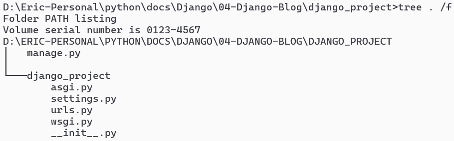

8. Introduction#
Cesium is an open-source JavaScript library for creating 3D globes and maps. It allows developers to build interactive web-based applications with high-performance rendering of geospatial data. Cesium is particularly renowned for its capability to visualize large-scale, time-dynamic, and geographically
It requires support of
WebGLBased on
Apache 2.0license

8.1. Support Data Format#
GeoJSON: A lightweight format for encoding geospatial data using JSON (JavaScript Object Notation).KML (Keyhole Markup Language): An XML-based format for expressing geographic annotation and visualization within Internet-based maps and Earth browsers.CZML (Cesium Language): A JSON-based format specifically designed for Cesium, allowing developers to describe time-dynamic scenes in Cesium applications.3D Tiles: A format for streaming massive heterogeneous 3D geospatial datasets, enabling efficient visualization of large-scale 3D content such as terrain, buildings, and point clouds.Tileset: Cesium supports various tileset formats for efficiently rendering large-scale datasets, including formats like quantized-mesh, 3D Tiles, and terrain tiles.STL (Stereolithography): A file format native to the stereolithographyCADsoftware used for creating 3D models, commonly used for representing 3D geometry in Cesium applications.COLLADA (COLLAborative Design Activity): A 3D model interchange format for exchanging digital assets between different graphics software applications, often used for importing 3D models into Cesium scenes.OBJ (Wavefront .obj file): A simple text-based format for representing 3D models, suitable for importing into Cesium applications for visualization.GML (Geography Markup Language): AnXML-based encoding for the transport and storage of geographic information, supported in Cesium for interoperability with GIS systems.
8.2. Cesium in developing#

8.3. Learning component for Cesium#
8.4. Cesium Environment setting#
Node.js and npm:Cesiumdevelopment requiresNode.js, which includesnpm(Node Package Manager), for managing dependencies and running scripts. You can download and installNode.jsfrom here.Use
node --versionto check whether you installNode.jssuccessfully
Create a New Project
First, create a new directory for your Cesium project. You can do this using the command line:
mkdir cesium-project cd cesium-project
Next, initialize a new npm project in the project directory:
npm init -y
This command creates a package.json file with default settings.
Install
Cesiumas a dependency usingnpm:npm install cesium
This command installs the Cesium library and adds it as a dependency in your package.json file.
!node --version
v14.17.6
!mkdir cesium-project
!cd cesium-project
!npm init -y
!npm install cesium
Wrote to e:\2024\github\gis\Cesium\package.json:
{
"name": "Cesium",
"version": "1.0.0",
"description": "",
"main": "index.js",
"scripts": {
"test": "echo \"Error: no test specified\" && exit 1"
},
"keywords": [],
"author": "",
"license": "ISC"
}
> protobufjs@7.2.6 postinstall e:\2024\github\gis\Cesium\node_modules\protobufjs
> node scripts/postinstall
+ cesium@1.116.0
added 39 packages from 79 contributors and audited 39 packages in 3.968s
found 0 vulnerabilities
npm notice created a lockfile as package-lock.json. You should commit this file.
npm WARN notsup Unsupported engine for @zip.js/zip.js@2.7.41: wanted: {"deno":">=1.0.0","node":">=16.5.0","bun":">=0.7.0"} (current: {"node":"14.17.6","npm":"6.14.15"})
npm WARN notsup Not compatible with your version of node/npm: @zip.js/zip.js@2.7.41
npm WARN Cesium@1.0.0 No description
npm WARN Cesium@1.0.0 No repository field.
Create an
HTMLfile in your project directory.This file will serve as the entry point for your
Cesiumapplication:Open
index.htmlin a editor and add the following content:
<!DOCTYPE html> <html lang="en"> <head> <meta charset="UTF-8" /> <meta name="viewport" content="width=device-width, initial-scale=1.0" /> <title>Cesium Example</title> <style> /* Add any custom styles here */ #cesiumContainer { width: 100%; height: 100%; } body, html { margin: 0; padding: 0; overflow: hidden; height: 100%; } </style> </head> <body> <div id="cesiumContainer"></div> <script src="./node_modules/cesium/Build/Cesium/Cesium.js"></script> <script> // Your Cesium code goes here var viewer = new Cesium.Viewer("cesiumContainer"); </script> </body> </html>
This
HTMLfile sets up a basic webpage with a containerdivfor theCesiumviewer and includes theCesiumlibrary via ascripttag.